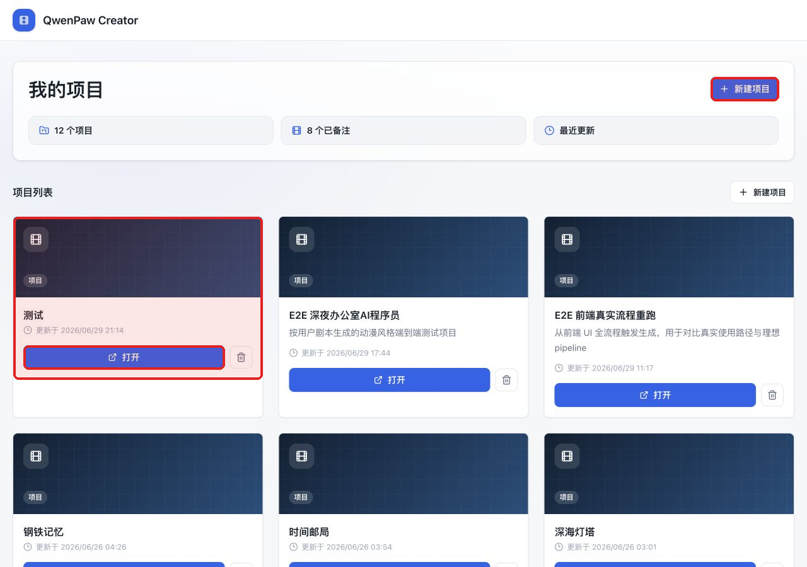
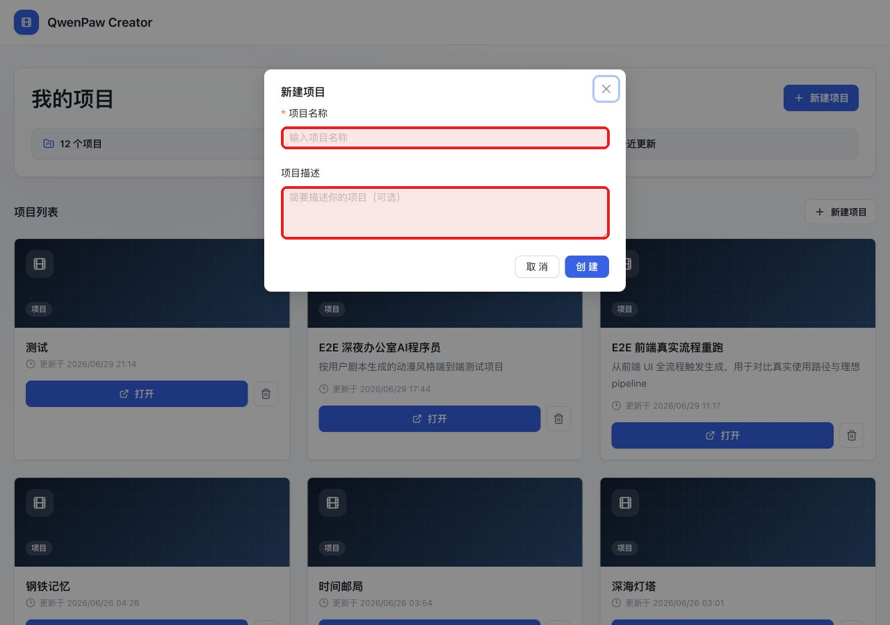
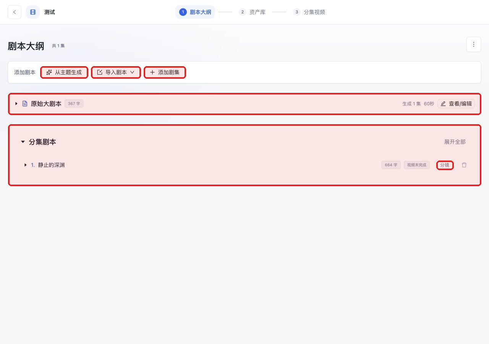
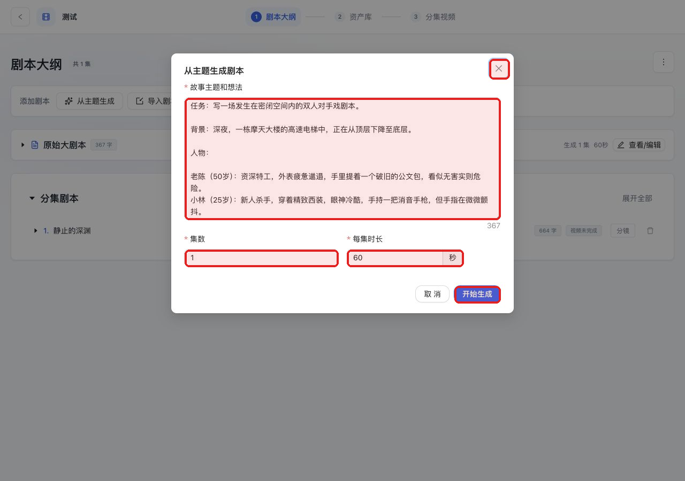
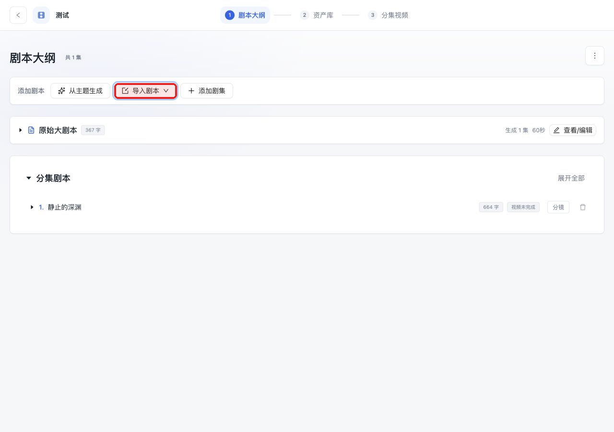
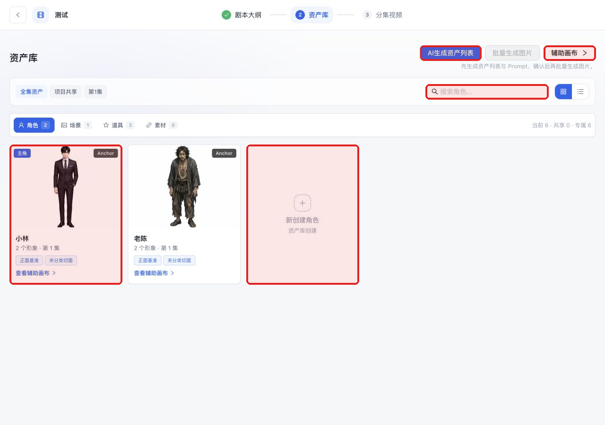
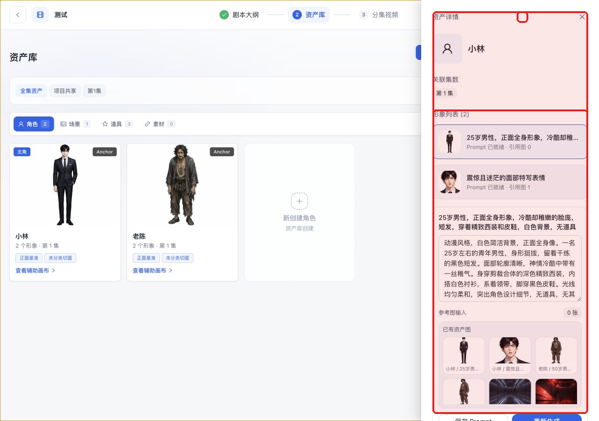
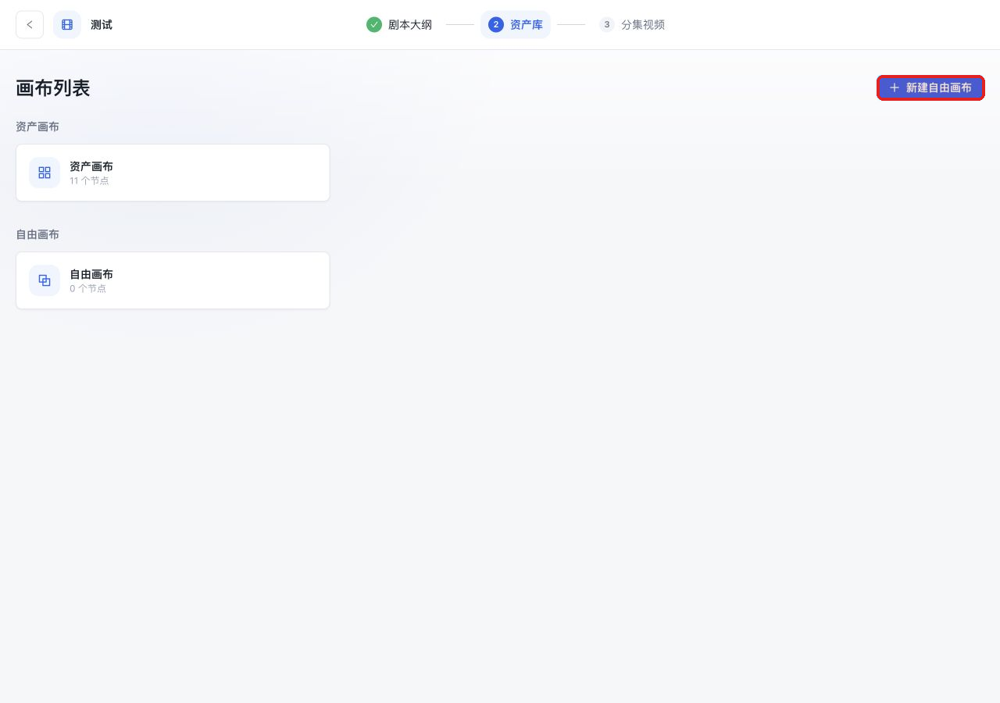
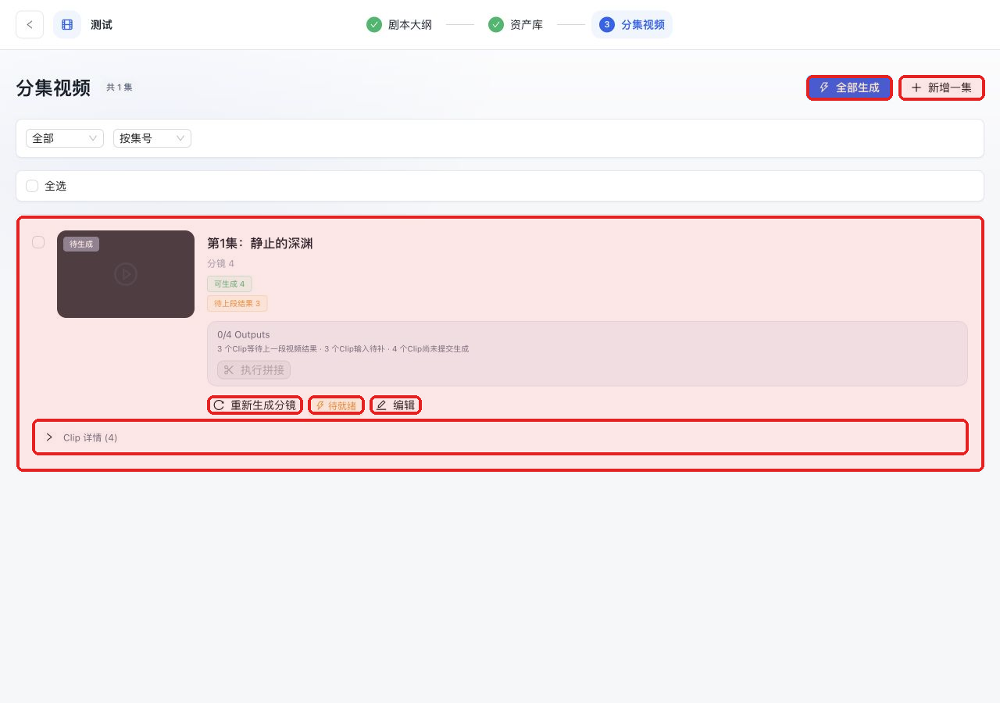
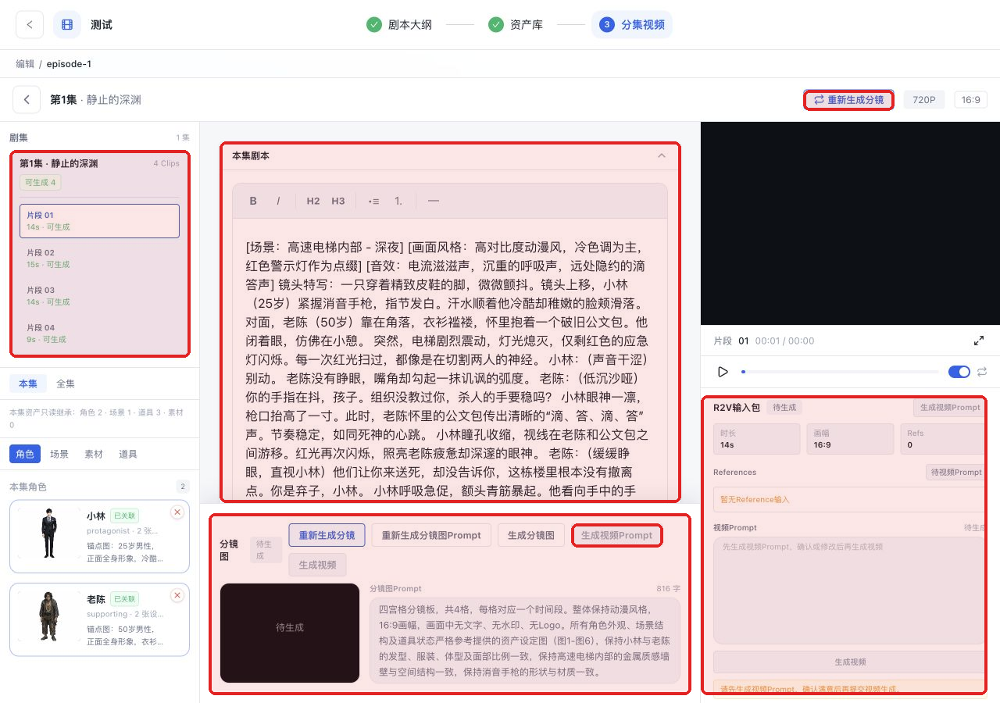

从原始剧本生成完整视频
按真实页面说明每个按钮、每一步可修改内容，以及背后的主要 API 流程。
快捷方式：点击导航栏右侧 ✨一键运行，输入主题后可自动完成全流程（剧本→资产→分镜→视频→拼接）。
0. 启动和检查
cd qwenpaw-creator
cp .env.example .env
# 编辑 .env，至少填写 TEXT/IMAGE/VIDEO/OSS 对应 Key，或改用 QwenPaw Tools 配置
# 启动 QwenPaw，并确保 qwenpaw-creator 已作为插件安装/软链到 QwenPaw working dir| 地址/目录 | 作用 |
|---|---|
http://127.0.0.1:18110/creator | 前端界面 |
http://127.0.0.1:18110/api/creator/health | 检查 Key、视频后端、FFmpeg |
qwenpaw-creator/data/projects | 项目 JSON 数据 |
qwenpaw-creator/generated | 图片、视频和拼接产物 |
执行逻辑：启动服务
QwenPaw 启动后会加载 qwenpaw-creator/plugin.py，注册 /api/creator/* 后端路由；前端由 qwenpaw-creator/ui/dist/index.js 注册 APP > Creator，并在 /creator 以独立 Creator 界面打开 qwenpaw-creator/ui/dist/app/index.html。这一步不调用 AI。
1. 项目列表

| 按钮/区域 | 作用 | 可修改项 |
|---|---|---|
| 新建项目 | 创建新项目 | 项目名、描述 |
| 项目卡片 | 显示已有项目 | 打开后继续编辑 |
| 打开 | 进入剧本大纲页 | 不改数据 |

执行逻辑：新建项目
项目保存到 qwenpaw-creator/data/projects/{id}.json，成功后进入 /project/{projectId}/script。
2. 剧本大纲页

| 按钮/区域 | 作用 | 可修改项 |
|---|---|---|
| 从主题生成 | 打开 AI 生成剧本弹窗 | 主题、集数、每集时长 |
| 导入剧本 | 导入或解析已有剧本 | 原始文本或 txt |
| 添加剧集 | 手动添加空白分集 | 标题和正文 |
| 原始大剧本 | 保存母稿/主题 | 可查看编辑 |
| 分集剧本卡片 | 显示单集字数和视频状态 | 可展开、分镜、删除 |
从主题生成

执行逻辑：AI 生成剧本
接口：POST /api/ai/script。后端会调用文本生成能力，按主题、集数、每集时长和风格生成结构化分集结果，并写入项目。
导入已有剧本

| 方式 | 作用 |
|---|---|
| 大剧本 AI 分集 | 把完整母稿交给 AI 拆分成分集 |
| 分集剧本解析 | 粘贴或上传已分集文本，前端按“第X集”或空行拆分 |
执行逻辑：分集剧本解析
前端本地执行，不调用 AI。优先按 第1集/第一集 识别；没有集号时按空行拆分。
3. Pipeline 一键运行
导航栏右侧有 ✨一键运行 按钮，点击后从右侧滑出 Agent 面板。
从主题开始
如果项目还没有剧本，可以在面板顶部的文本框输入创作主题，然后点击 从主题开始：
- 后端先根据主题生成分集剧本
- 自动进入 Pipeline 全流程：风格定义 → 资产规划 → 资产生成 → 分镜规划 → 故事板 → 视频生成 → 拼接 → 评估
- 每一步完成后会自动同步到项目 JSON，刷新页面或另开 tab 都能看到最新结果
基于已有剧本运行
如果项目已有剧本，留空输入框直接点击 开始运行：
- Pipeline 会跳过所有中间检查点，自动执行全部 10 个步骤
- 面板以 Agent 对话的形式逐条显示当前执行的步骤
- 运行期间请勿关闭此窗口
执行逻辑：Pipeline 编排
接口：POST /api/pipeline/create、POST /api/pipeline/{id}/run-all、GET /api/pipeline/{id}
Pipeline 按 STEP_ORDER 顺序推进：
episode_split → style_guide_gen → asset_planning → asset_prompt_gen
→ asset_image_gen → clip_planning → storyboard_image_gen → video_gen
→ stitching → evaluation其中前 8 步为检查点（checkpoint），run-all 模式会自动 approve 并继续下一步。每步完成后结果会同步写入 qwenpaw-creator/data/projects/{id}.json，前端可实时看到变化。
4. 资产库

| 按钮/区域 | 作用 |
|---|---|
| AI生成资产列表 | 从分集剧本规划资产，并生成参考图资料 |
| 辅助画布 | 进入画布补充资产关系和切面 |
| 搜索框 | 按名称搜索资产 |
| 角色卡片 | 打开资产详情，查看锚点图和衍生图 |
| 新建角色卡片 | 手动创建角色 |

执行逻辑：AI 生成资产
接口：POST /api/ai/assets/from-script。后端会先从分集剧本规划角色、场景、道具等资产，再为资产生成锚点图和衍生图资料；开启图片生成时，会继续生成参考图。
5. 画布（可选）

README 最新流程把画布作为资产阶段的手动补充能力，不是必须步骤。已有资产不够稳定时，再进入画布补节点和参考图。
6. 分集视频页

| 按钮/区域 | 作用 |
|---|---|
| 全部生成 | 批量推进当前可执行任务 |
| 新增一集 | 手动新增一集 |
| 分集视频卡片 | 显示输出数量、Clip 状态和阻塞原因 |
| 重新生成分镜/生成分镜 | 为该集拆分 Clip |
| 编辑 | 进入分镜编辑页 |
| Clip 详情 | 展开每个 Clip 的生成状态 |
执行逻辑：生成分镜
接口：POST /api/ai/storyboard。后端会根据单集剧本、画幅、目标时长、角色、场景和风格生成结构化分镜，并归一化结果，保证单个 R2V Clip 不超过 15 秒。
7. 分镜编辑页

| 区域/按钮 | 作用 | 可修改项 |
|---|---|---|
| 片段列表 | 选择当前 Clip | 切换 Clip |
| 本集剧本编辑器 | 修改该集正文 | 场景、动作、对白 |
| 分镜图区域 | 生成/查看 storyboard sheet | 参考图 |
| R2V 输入包 | 视频生成资料包 | 参考资源、时长、画幅 |
| 视频生成准备 | 整理当前 Clip 的视频生成内容 | 生成前可人工检查 |
| 生成视频 | 提交异步视频任务 | 会消耗额度 |
执行逻辑：分镜图
后端会先整理当前 Clip 的分镜图生成资料，再调用图片模型生成可作为 R2V 参考的 storyboard sheet。
执行逻辑：R2V
前端会先整理当前 Clip 的结构化上下文，包括项目风格、画幅、当前集、当前 Clip、角色/场景/道具/素材、分镜图引用、shots、camera 和 dialogue。
视频提交后会返回 task_id，之后通过任务查询接口回填结果 URL。
8. 拼接和导出
| 操作 | 背后逻辑 |
|---|---|
| 构建拼接计划 | POST /api/video/stitch-plan 检查 Clip 是否都有结果 |
| 执行拼接 | POST /api/video/stitch-execute 调用 FFmpeg |
| 预览 | 播放拼接后的整集视频 |
| 导出/下载 | 下载 qwenpaw-creator/generated 中的最终文件 |